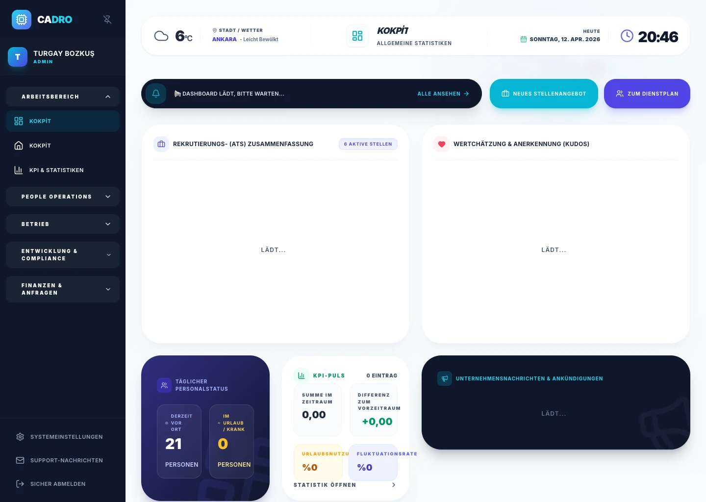

Keine Formelkatastrophen
Eine verrutschte Zeile in Excel kann die Abrechnung verfälschen. Mit CADRO bleiben Berechnungen konsistent.

DIGITALE TRANSFORMATION
Verabschieden Sie sich von manuellen Berechnungen, fehleranfälligen Formeln und Sicherheitsrisiken. Wechseln Sie zu einem automatisierten HR-System mit durchgängig vernetzten Daten.

Daten sind auf verschiedene Tabellen verteilt und eine genehmigte Abwesenheit aktualisiert die Zeiterfassung nicht automatisch.
Alles ist integriert. Sobald Urlaub genehmigt ist, werden Kalender und Payroll-Daten automatisch aktualisiert.
Nahezu keine Berechnungsfehler und deutlich mehr Zeit für strategische HR-Arbeit.
VERGLEICH
Eine verrutschte Zeile in Excel kann die Abrechnung verfälschen. Mit CADRO bleiben Berechnungen konsistent.
Statt unsicherer .xlsx-Dateien werden Ihre Daten verschlüsselt und in einer konformen Cloud gespeichert.
Excel bietet keinen sicheren Self-Service. In CADRO sieht jede Person nur ihre eigenen Daten im geschützten Portal.
FAQ
Excel ist nützlich, aber weder Datenbank noch Workflow-System. Fehleranfällig, ohne belastbare Audit-Trails und mit wachsendem Team schnell zu langsam.
Ja. Mit dem Importwerkzeug übernehmen Sie Mitarbeitendenlisten, Teams und Urlaubskonten in wenigen Minuten.
BEREIT?